시즌 29-30은 역대급 혼돈의 도가니로
현재 국밥 일부를 제외한 메타덱 이라는게 존재하지 않습니다
그러므로 해당 글은 니케의 특성 위주의 활용법이 기술되며
편성은 최대한 니케와 궁합이 좋은 캐릭터들로 두루뭉술하게 기재됩니다
아니스 스타라이트
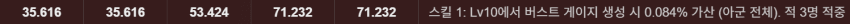
현 버전 기준, 1버스트중에 가장 높은 버스트 충전량을 보유하고 있습니다
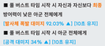
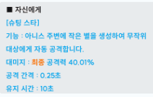
스테이지와 마찬가지로 버프량으로 팀원들을 강화하고
높은 버스트 충전에 자기 스스로 딜까지 다하는 만능형 캐릭터입니다
심지어 방어형 니케이기 때문에 비스킷의 무적까지 받아먹습니다
아니스 본인이 기절 상태여도 슈팅 스타는
자동으로 추적하기 때문에 상대적으로 딜로스가 적은 것도 소소한 장점
현 버전 기준, 덱의 핵심 요원으로 활약하고 있습니다
다만, 같은 1버스트 니케가 존재할 시, 재진입에 돌입하기 때문에
자동 전투인 아레나 환경에서는 버스트 재진입이 단점으로 작용합니다 (시간 로스 발생)
그러므로 1버스트와의 복합 편성에 제약이 걸려있습니다
주요 편성
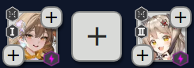
아니스 + 비스킷 조합
방어형인 아니스와 비스킷의 5초 무적을 활용한 엔진입니다
초반 빌드 구간을 굉장히 안정적으로 가져갈 수 있습니다
여기에 2번 자리에도 같은 방어형 2버스트 니케를 배치해서
같이 비스킷의 무적을 활용하는 전략이 보편적입니다
현재 버전 기준 2버스트 파트너로는
노아 블랑 베이 폴크방 등이 사용됩니다
사실 아니스 비스킷에 딱맞는 2버스트 요원이 부족한 상황이니
추후, 최적의 파트너가 추가될 수 있습니다
노아, 베이, 폴크방 조합시에는 빠르게 버스트를 가져가는 것이 추천되며
블랑과 조합시에는 늦게 버스트를 가져가서
비스킷 무적이 끝날때 즈음, 블랑의 10초 무적 리필을 받는 전략을 수립합니다
3버스트 파트너로는 다양한 바리에이션이 존재합니다
프리바티
전체 기절을 이용해서 아니스의 일방적인 딜 타임을 확보합니다
프리바티는 버충이 낮아 시즌 28까지는 픽률이 저조했으나
아니스가 이를 보완하여 시즌 29부터 주로 기용되고 있습니다
미하라
블랑과 조합시, 부족한 딜을 미하라가 보충할 수 있습니다
아니스와 블랑을 제외한 니케들은 비스킷의 무적을 받지 못해 적의 공격에 노출되는데
미하라는 오히려 전투 불능에 빠질 시, 상대방에게 강력한 사슬 공격을 지속적으로 가하기 때문에 궁합이 좋습니다
네온
위와 같은 이유로, 아니스와 2버스트를 제외한 니케는 비스킷의 무적을 받지 못하기 때문에
피격시 3초 무적을 보유한 네온은 같이 생존하여 풀버스트 연결이 가능합니다
수니스
아니스에게 시전자 기준 공격력을 제공함으로
매커니즘이 훌륭한 아니스의 슈팅스타가 더 위력적으로 바뀝니다
단, 풀버스트 발동 시에 한정되며 수니스의 자체 버충이 높은 편이 아님에 주의하세요
그외에도 리버렐리오 같은 일섬계 니케나
다양한 조합이 현재 연구되고 있습니다
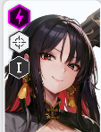
목단
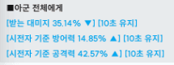
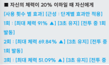
버스트 발동시 팀 전체에게
굉장히 높은 받는 대미지 감소 버프를 부여하고
본인 스스로의 자힐도 가지고 있어서
쉽게 죽지 않는 탱커형 1버스트입니다
목단은 지속적인 팀 보호 능력에 최적화 되어 있지만
순간적으로 들어오는 강력한 딜에 대해서는 2버스트의 보조가 필요합니다
(과거에는 목단만으로 버텼으나, 현 버전 기준으로 목단 혼자 케어가 불가능)
목단은 AR 자동소총이므로 버스트 충전량에 약점을 가지고 있기 때문에
팀 전체 3초 무적을 보유하며 버스트 충전량도 우월한 노아가 가장 최적의 파트너이며
순간 폭딜에 대항할 수 있는 베이도 파트너로 기용됩니다
단, 리버렐리오와 같은 무지막지한 순간 폭딜은 베이 혼자서 커버가 안되기 때문에
베이+비스킷을 조합해서 막아야하는데 둘다 버스트 충전량이 높지 않다는 단점이 있습니다
시즌 30 기준으로 아니스에 의한 딜 인플레가 한번더 발생하여
무적을 제공하는 노아쪽 기용률이 현저히 높아졌습니다
(비스킷을 아니스가 사용하기 위해 빠진 영향도 있습니다)
팀의 생존력을 보장하기 때문에 3버스트는 딜이 강하거나 지속 전투가 강한
퓨어 딜러계 니케들로 주로 꾸려집니다
단, 목단 자체의 버충이 낮기 때문에 네온 등의 사용에는 버스트 충전량에 주의
로산나
앞서 소개된 니케들과 달리
굉장히 독특한 매커니즘으로 극한의 공격성을 띄는 1버스트 니케입니다
굉장히 사기적인 스킬을 3가지나 보유하고 있는데 하나하나 살펴보면
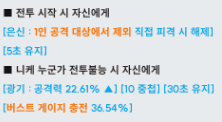
양팀의 니케가 전투불능시 즉시 버스트 게이지를 36.54% 충전합니다
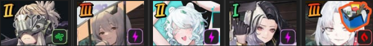
그리하여 이렇게 양산형 니케를 앞에 세워두고
의도적으로 빠른 전투불능을 유도하여 버스트를 충전하는 전략이 사용됩니다
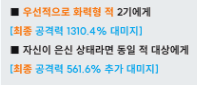
1버스트 사용시, 화력형 니케 둘에게 엄청나게 강한 죽창을 꽂습니다
"1버스트" 이기 때문에 이것을 방어하는 수단은 사실상 없다고 봐야합니다
대부분의 방어기가 2버스트라 시간적으로 방어할 방법이 없으며
화력형 니케가 대상이라 방어형 니케의 비스킷 무적 활용도 불가능합니다
은신 (직접 피격 당하지 않았을 시) 상태에 추가 데미지가 있기 때문에
로산나는 주로 4번과 같은 위치에 숨어있습니다
유일하게 화력형이면서 무적 상태에 돌입이 가능한 네온이 있습니다만
네온은 첫 피격은 무적이 아니기 때문에
만약 네온이 미리 무적에 돌입하지 않았다면
순간적인 데미지는 그대로 받을 위험이 있음에 주의하세요
버프 제거
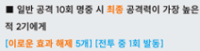
로산나의 공격 10발 (전투 개시후 1.6초)이 명중할 경우
최종 공격력이 가장 높은 니케 2기의 버프를 지워버립니다
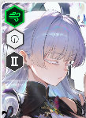
만약 나유타보다 공격력이 높은 니케가 둘 존재하지 않는다면
나유타의 불굴 9초도 삭제당해버리고
자칼의 피해 분배는 같은 조건인 최종 공격력이 높은 2명을 지정하기 때문에
깔끔하게 피해 분배가 제거되어 버립니다
전격 니케의 악몽이라는 레이블입니다만
레이블의 전격 데미지 감소 버프도 2명분을 삭제해버립니다
보통 레이블은 전투 돌입후, 자버프로 공격력이 높아지기 때문에
결과적으로 레이블 + 화력형 니케 한명의 버프가 삭제되어
화력형 니케 한명은 그대로 이어지는 로산나의 죽창에 노출됩니다
이러한 압도적인 공격력에 비례해서 방어 수단은 전무하기 때문에
위와 같은 굉장히 공격적인 덱에 주로 편성됩니다
쟈칼
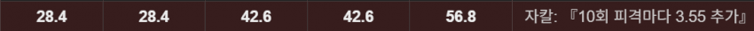
아니스 출시 전 가장 높은 버스트 충전량을 보유했던 1버스트 니케입니다
또한 자칼이 10회 피격될때 마다 3.55%의 버스트가 충전됩니다
AR, SMG, MG 계의 니케가 상대라면 버스트가 복사가 됩니다
링크
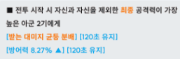
전투 시작시 최종 공격력이 높은 2기의 니케와 자칼은 링크 상태에 돌입합니다
이 링크된 3명이 피해를 입는 것은 정확하게 3등분 되어 분배됩니다
피격자 기준의 방어력이나 데미지 감소가 계산된 최종 데미지를 n빵 합니다
이로인해 비교적 단단한 목단 등과 링크하여 더욱 더 단단하게 만드는 전술도 있습니다
"최종 공격력" 이기 때문에 버프, 오버로드 옵션등이 전부 계산된 기준으로 링크되는 것에 주의하세요
피격시 반사를 가진 홍련과
데미지를 같이 받으며 피격시 버스트 충전 + 디버프를 가진 쟈칼은
궁합이 굉장히 좋습니다
또한, 현재 체력이 제일 낮은 대상에게 9초 무적 버프를 거는 블랑과 조합시
쟈칼의 링크를 이용해서 버프 대상을 조절할 수 있습니다
쟈칼의 링크 대상은 피해를 분산하기 때문에 항상 같은 데미지가 3등분되어 들어오는데
같은 데미지를 3명이 똑같이 받는다면
최대 체력이 제일 낮은 대상이 현재 체력이 제일 낮은 대상이 되기 때문입니다
노이즈
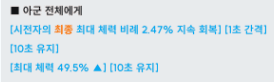
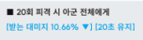
피격시 받는 데미지 감소 버프를 뿌리고
스스로의 자힐과 팀 전체 힐을 보유하고 있는 1버스트 탱커 니케입니다
최대 체력 증가는 그만큼의 체력이 순간적으로 회복되는 것과 동일하기 때문에
노이즈가 1버스트를 발동시 49.5%의 순간적인 힐이 들어옵니다
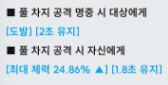
노아와 동일하게 풀 차지 공격시 도발을 가지고 있습니다
한때, 세이렌 때문에 노아가 세이렌을 도발해서 스턴에 걸려 버스트를 사용하지 못하던 시절에
노이즈와 노아를 같이 배치해서 노이즈가 스턴을 맞아주는 운영을 했습니다
현재는 노아의 밸류가 높아져서 노이즈와 사용되는 경우가 비교적 적어졌습니다
받는 데미지 감소의 중첩은 언제나 좋기 때문에
목단과 조합하기도 합니다
다만 노이즈 자체도 버스트 충전량이 높은 편이 아니라
버스트 충전 부담이 커지는 단점이 있습니다
최근에는 홍련에게 불굴을 주기 위한 덱에서
순간적인 힐로 홍련이 급사하는 것을 막는 롤도 맡고 있습니다
1버스트로써의 탱킹 능력은 굉장히 높지만
버스트 충전량이 적은 것과
최대 체력 증가 만으로는 일섬을 막지 못하는 이유로 기용률은 목단보다는 떨어집니다
라푼젤
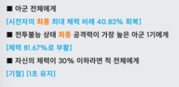
과거에는 지속적인 힐의 밸류로 종종 사용되었지만
현재는 라푼젤의 힐량 만으로는 버틸 수 없기 때문에 힐보다는
버스트 스킬의 부활과 기절을 활용합니다
특히 1버스트 기절이라는 특수성 때문에
비록 1초 스턴이지만 상대방의 2버스트 발동을 느리게 만드는게 가능합니다
한때 시대를 풍미했던 라푼젤 솔린 홍련덱입니다
라푼젤의 사고를 방지하기 위해 솔린이 보조합니다
라푼젤이 1초 스턴을 걸면 이어지는 홍련의 일섬을 막지 못하고 그대로 맞게 설계되어있습니다
- 라푼젤의 체력이 30% 이하로 떨어지지 않는 경우가 많음
- 레이블에 막힘
이라는 사정으로 현재는 기용률은 떨어졌습니다만
최근에 다시 이러저러한 사정으로 등장하고 있습니다
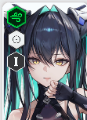
세이렌
전투 개시 3.267초 경과하는 타이밍에 고정적으로 스턴을 겁니다
단, 상대가 엄폐중일때는 스턴을 피할 수 있습니다
이로 인해 홍련의 장탄수를 고의적으로 32발 이하로 만들어
스턴을 피하는 잡기술이 있습니다
SMG 무기군이라 자가 버스트 충전률이 굉장히 낮고
스턴을 염두에 두고 편성하기 때문에
현재 세이렌은 잘 기용되지 않습니다
하지만 이 스턴을 염두에 두지 않은 덱들은
여전히 세이렌 하나로 무력화 하는 것이 가능하기 때문에
상대방이 오만하게 덱을 짠다면
세이렌으로 참교육해주세요
루마니
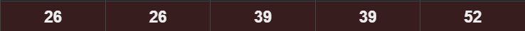
클립 런쳐 특유의 높은 버스트 충전량을 가지고 있는데
1버스트에선 굉장히 희귀한 포지션입니다
거기에 방어형이기 때문에 비스킷을 활용할 수도 있어
여전히 가치가 높은 1버스트 니케입니다
의외로 조건부 도발을 가지고 있기 때문에
소소한 어그로 핑퐁도 기대할 수 있습니다
살아있다면
레이블
전격 니케들의 악몽 레이블입니다
전투 시작시 팀 전체에게 5초간 전격 데미지의 70%를 감소시키는 버프를 겁니다
자가 보호막을 가지고 있기 때문에
상대방에게 버스트 충전을 제공할 수 있다는 점 때문에
특수한 경우가 아니면 편성상 뒤에 숨깁니다
또한, 보호막 파괴시 스스로 기절 상태에 들어가기 때문에 메인 1버로 쓰기에 까다로운 점이 있습니다
주의할점은 굉장히 높은 자가 공버프를 가지고 있는데
쟈칼과 편성시에 쟈칼보다 왼쪽에 위치할 경우
니케의 버프는 왼쪽부터 계산되기 때문에 레이블이 링크 대상으로 고정됩니다
이미지 첨부 제한에 의해 여기서 줄입니다
소다의 랜덤 스턴에 의한 활용법은 1패턴이며
솔린의 활용법은 라푼젤 항목에 기재되었기 때문에
관련 정보는 별도로 검색해주세요